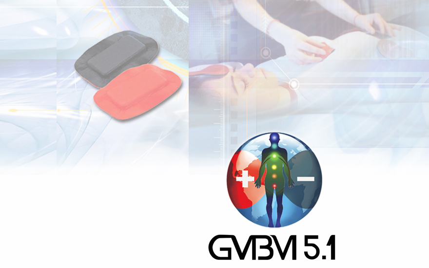

Inicio
Padecimientos
Listas
1
Reservorios
Reservorios
2
Emocionales
Emocionales
3
Virus y hongos
Virus
Hongos
4
Bacterias y parásitos
Bacterias
Parásitos
5
Especiales y disfuncionales
Especiales
Disfuncionales
6
Básicos
Básicos
Mil pares
nuevo
Protocolos
Nuevos protocolos
Esencial: 173 puntos
Completo: x zonas
Tutorial
Tutorial: intro
Atlas de Puntos
Qué es el Par B.M.?
Tratamiento
Clasificación de pares
Actualidad
Artículos
Eventos
Directorio